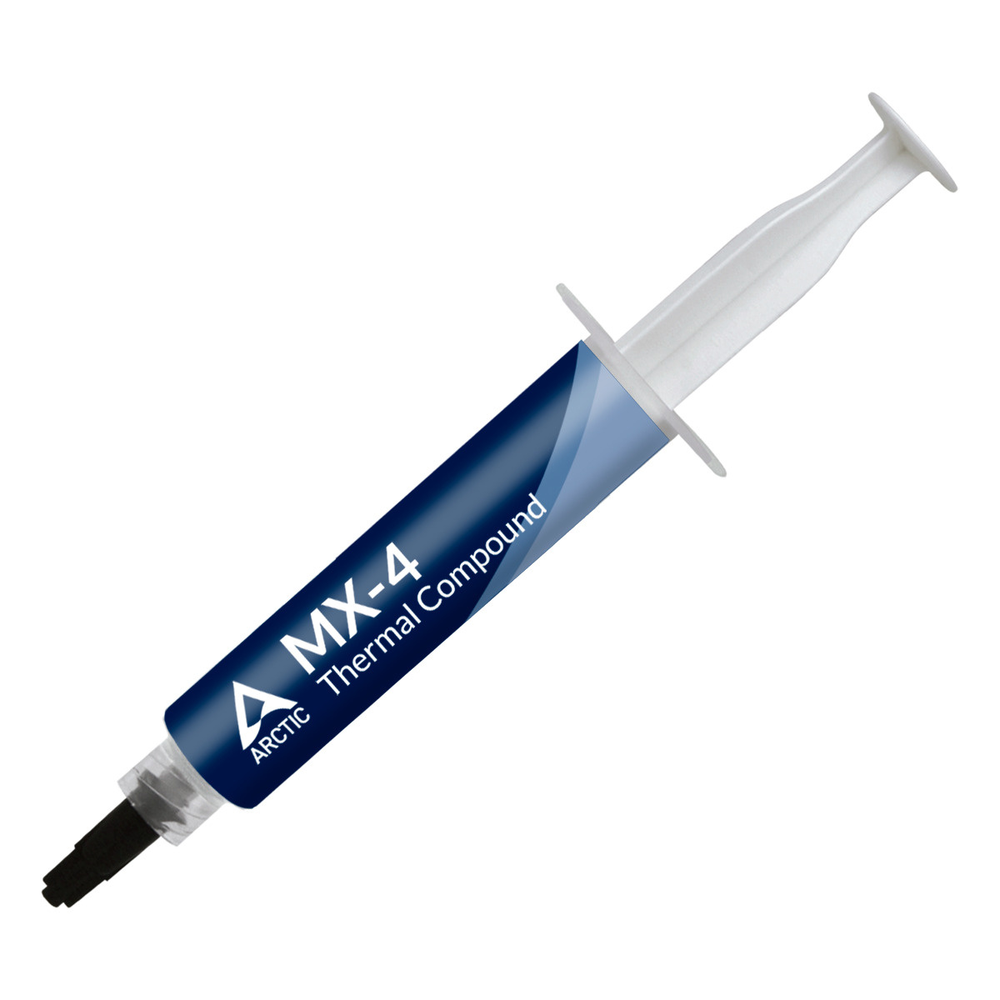

Термопаста — это теплопроводящий состав который улучшает тепло передачу между нагревающимя элементом (процессором, видеокартой) и радиатором, она бывает разных консистенций жидкая (практически как вода), средней густоты и густая. Также разных цветов в основном белая, серая и синяя.
 Как правильно наносить термопасту?
Картинки по запросу термопаста
Вам нужно выдавить небольшую каплю термопасты прямо по центру крышки процессора. Затем просто установите кулер на свое место. Он сделает всю работу за вас: а именно во время прижима равномерно распределит термоинтерфейс между основанием и теплораспределительной крышкой камня.7